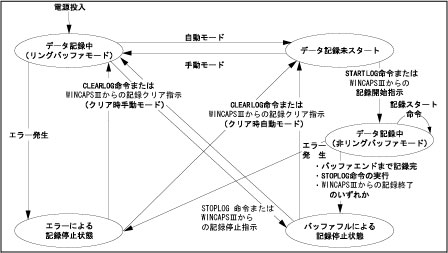

STARTLOG
（ステートメント）

サーボ制御ログの記録を開始します。

STARTLOG

プログラムでサーボ制御ログの記録を開始するのに、STARTLOGコマンドを使います。
確実にサーボ制御ログを記録するために、STARTLOGコマンドを実行する前に、あらかじめCLEARLOGコマンドを実行するか、WINCAPSⅢでサーボログクリア操作を行なってください。すでに、サーボ制御ログの記録を開始しているときには、STARTLOGコマンドを実行しても、記録できません。
手動モードとティーチチェックモードのときには、自動的にサーボ制御ログの記録を開始します。
自動モードでは、プログラムの中で記録開始指示があるか、またはWINCAPSⅢでの記録開始操作によって、サーボ制御ログの記録を開始します。
サーボ制御ログの記録を停止するのは、エラーが発生したときと、バッファがいっぱいになった（10秒間）ときです。手動モード時は、記録停止の指示がされるまで最新の10秒間分のログを保持します。
ログ動作の状態遷移図



|
STARTLOG
|
'サーボ制御ログの記録を開始します。
|